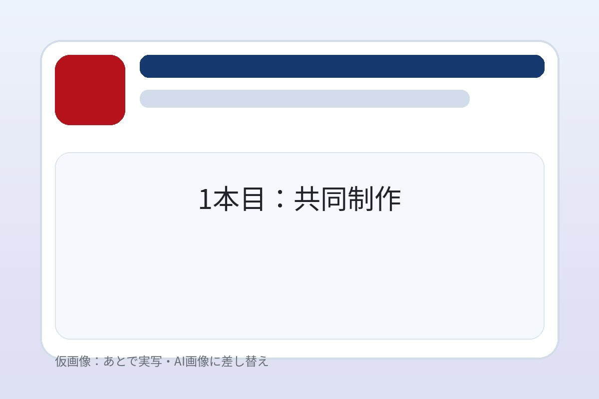
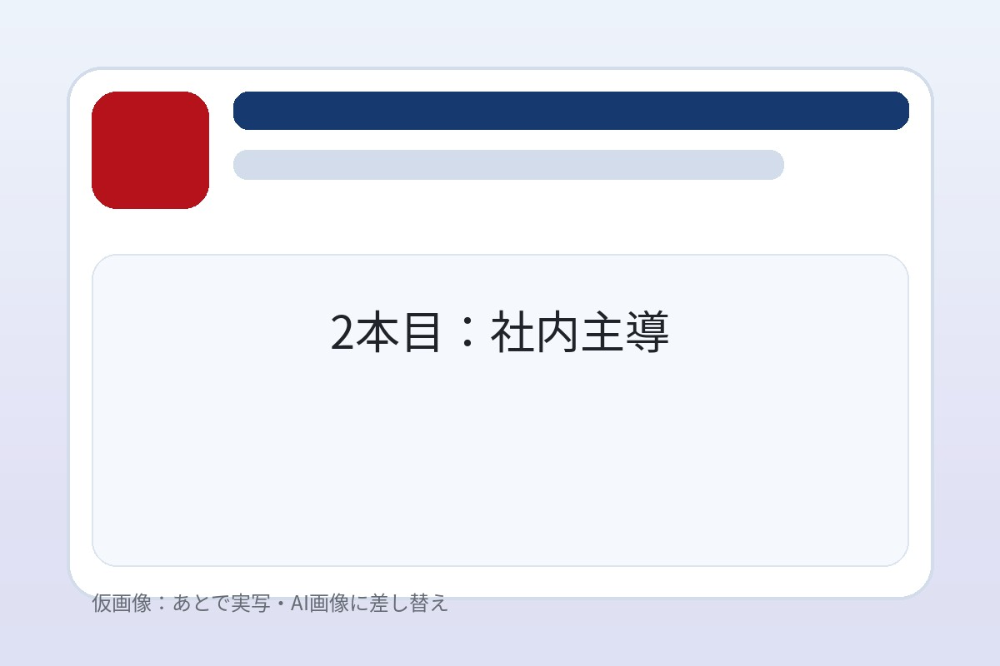

外注は制作費が
高くて続かない
1本だけなら外注でもよいかもしれません。ただ、継続的に動画を使いたい場合、毎回の制作費が大きな負担になります。
外注コスト
動画を活用したい。でも、毎回外注すると費用も時間もかかる。
社内で作ろうとすると、撮影・編集・構成・デザインでつまずく。
1つの動画テーマに絞り、2ヵ月で社内に制作の型を残します。
 RECRUIT
CASE
YOUTUBE
TRAINING
HOW TO
RECRUIT
CASE
YOUTUBE
TRAINING
HOW TO
動画を作ること自体はできても、継続して活用するには壁があります。
1本だけなら外注でもよいかもしれません。ただ、継続的に動画を使いたい場合、毎回の制作費が大きな負担になります。
外注コスト撮影、音声、編集、テロップ、BGM、書き出し。始めてみると、思った以上に判断することが多く、手が止まりがちです。
スキル不足担当者任せになり、忙しくなると止まる。「型」がない状態では、動画制作は継続しにくくなります。
継続できない
必要なのは、動画を1本作ることではありません。
社内で「作り続けるための基礎」と「型」を持つことです。
動画内製化支援プログラムは、外注で完成動画を受け取るのではなく、社内に「作り方」と「型」を残すためのプログラムです。 講師と社内担当者2名で1つの動画テーマを選び、2ヵ月の間に動画を2本制作します。1本目で型を作り、2本目で社内主導で再現する。 この2段階を通して、次回以降も社内で作り続けやすい状態を整えます。
採用 / 導入事例 / YouTube / 教育研修 / HowTo から1つ選定
1本目は講師と共同、2本目は社内主導で再現
テンプレート・仕様書・チェックリストなど9点を納品
まずは、自社で継続的に必要になる動画を1つ選びます。1つに絞ることで、2ヵ月でも現実的に習得しやすくなります。
 01
01
社員インタビュー、仕事紹介、職場紹介など。採用サイトや会社説明会、求人媒体での活用を想定。
 02
02
顧客インタビュー、導入前後の変化など。営業資料や商談前共有、Webサイト掲載に活用。
 03
03
代表メッセージ、業界解説、ノウハウ発信。認知拡大と信頼形成の発信チャネルに。
 04
04
社内研修、営業研修、接客研修など。属人化しがちな指導を動画で標準化できます。
 05
05
使い方説明、操作説明、FAQなど。顧客サポートや問い合わせ削減にも活用できます。
※ 複数ジャンルに広げていきたい場合は、別途「動画リーダー育成コース」もご案内できます。まずは1テーマに集中することをおすすめしています。
動画制作には多くのスキルがあります。だからこそ、このプログラムでは学ぶ範囲を広げすぎません。
1テーマに絞るから、2ヵ月で社内に型が残る。
採用動画、導入事例動画、教育研修動画など、最初に1つのテーマを選び、その型に必要なスキルだけに集中します。あれもこれも、ではなく「1つを社内で作り続けられる状態」をゴールにします。
動画スクールのように網羅的に学ぶのではなく、実際に社内で動画を作るために必要な撮影・編集・判断基準だけに絞り込みます。学んだことが、その日からの実務に直結します。
1本目で基準を作り、2本目で社内担当者が再現します。手を動かしながら覚えるので、講義中心の研修よりも社内に残りやすいスタイルです。
2ヵ月で、動画テーマの設計から制作、社内再現までを順番に進めます。
完成イメージを、実現可能性も踏まえて整理します。誰に何を伝えるか、どこで使うか、どう活用するかをまず合わせます。
インタビュー撮影、Bロール、音声、編集の基本を、テーマに必要な範囲で学びます。最初から網羅しないことを意識します。
講師主導で、その会社にとっての動画制作の基準（=型）を作ります。テロップ、BGM、構成、撮り方の判断基準を一緒に整えます。
型を作る1本目で作った型をもとに、社内担当者が主導して制作します。再現できるかをこの段階で確認します。
型を再現ご希望の場合は、3ヵ月のオンライン相談と動画レビューも可能です（オプション）。型が定着するまで伴走できます。

第1本構成、質問設計、カット選び、テロップ、BGM。実際の制作を通して、社内独自の判断基準を整理します。

第2本1本目で作った型をもとに、社内担当者が主導して制作。詰まったポイントを講師がレビューし、社内で完結できる状態に近づけます。
動画2本だけでなく、次回以降も使える「制作の型」が9点、社内に残ります。
1本目で型を作り、2本目で社内再現を確認した完成版動画。そのまま採用・営業・教育の現場で使えます。
毎回ゼロから編集画面を作る手間を減らす、テーマ専用の編集プロジェクトテンプレート。
編集ソフト内で再利用フォント、サイズ、色、配置の基本ルールを整理。担当者が変わってもブレない字幕基準。
画面上のテキスト表現社名・氏名・役職などを画面下に表示する定型デザイン。社内インタビュー動画で必須の要素。
話し手の肩書き表示動画の冒頭や末尾に出るロゴ演出。企業らしさを伝えるシンプルなブランド表現を整えます。
ブランド表示動画の導入と締めを毎回考える手間を減らす、再利用可能な定型素材を用意します。
導入・締めの定型動画テーマに合う音楽の選び方を整理。著作権面で安全な選定の考え方もあわせてお渡しします。
音楽の選定ルール制作ルールと、撮影時に必要なカットを資料として整備。担当者の引き継ぎ時にも有効です。
引き継げる制作書類作業漏れを防ぐための確認項目を整理。次回以降の制作を、社内だけで進めやすくします。
運用時の確認資料※ 用語に馴染みがなくても問題ありません。プログラム中に1つずつ意味と使い方を説明しながら整えていきます。
高品質な動画を短期間で作るなら外注も有効です。一方、継続的に使うなら社内に型を残す意味があります。
講義を受けるだけではなく、実際の動画制作を通じて、自社用の型とノウハウを得られるところに価値があります。
講義料ではなく、実制作と社内に残るノウハウに対する価格です。
月1本程度の動画を継続的に作りたい企業に向いています。年に1〜2本だけ動画が必要な企業は、通常の外注の方が合うこともあります。
いいえ、2ヵ月ですべての動画を自由自在に作れるようにするものではありません。まずは1つの動画テーマに絞り、そのテーマについて社内で作り続けやすい型を残すことを目指します。複数ジャンルに広げたい場合は、別途「動画リーダー育成コース」もご案内できます。
採用動画、導入事例動画、企業YouTube動画、教育研修動画、HowTo動画のいずれかを想定しています。重要なのは「最初から何でも作れる」を目指すのではなく、1つの動画テーマに絞ることです。
基本はPremiere Proを想定していますが、無料で使えるDaVinci Resolveでの対応も可能です。社内環境に合わせてご相談ください。
はい。スマホ、三脚、外部マイクなど、現実的な機材から始められます。最初から本格的な撮影機材を揃える必要はありません。
社内担当者は2名を想定しています。1人が抜けても継続できる体制を作るためです。1名でのご参加も相談可能ですが、その場合は社内継続の難易度が上がる点はあらかじめお伝えしています。
企業様の状況によっては、人材開発支援助成金などが活用できる場合があります。ただし要件・採択は企業様ごとに異なるため、ご相談時に状況を伺ったうえで一般情報をご案内する形になります。助成金が前提のサービスではありません。
採用動画、導入事例動画、企業YouTube動画、教育研修動画、HowTo動画。
どの動画を社内で作れるようにしたいかで、必要な型は変わります。
まずは無料相談で、御社に合うテーマからご一緒に整理します。
※ 相談は無料です。お電話・オンライン面談どちらも可能です。